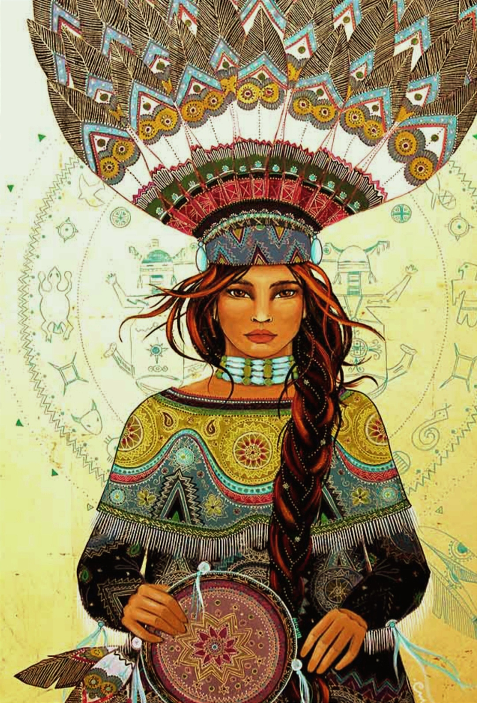
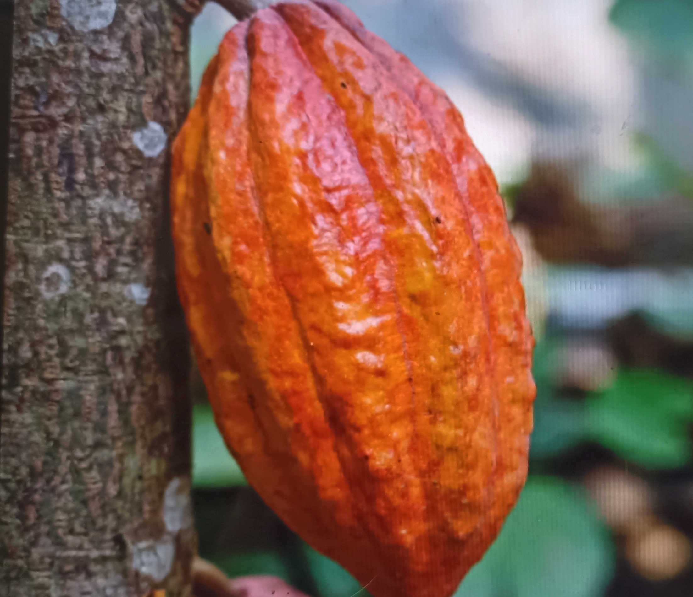
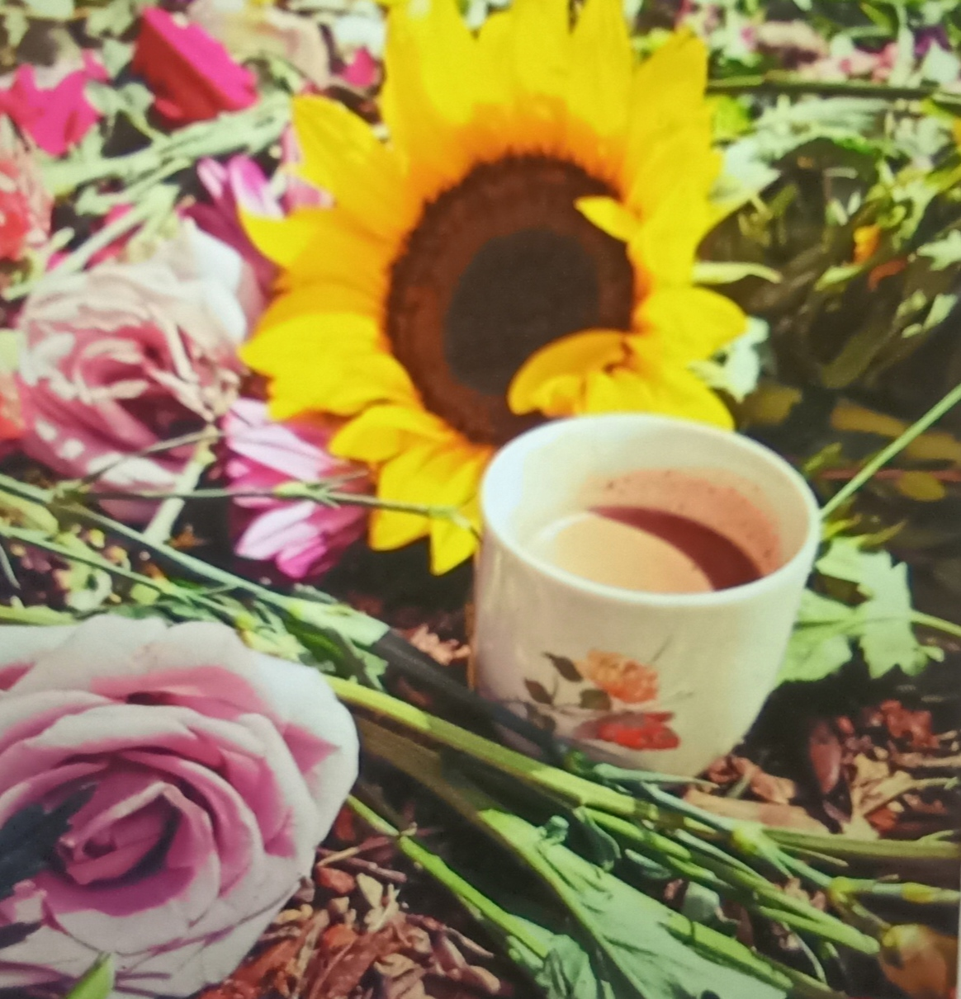
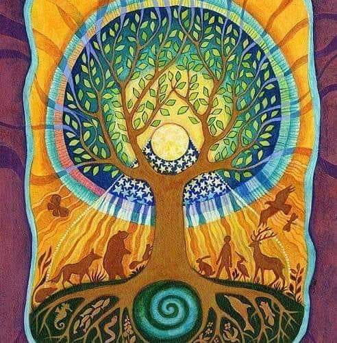

Pratiquante en Chamanisme
Soin et séance chamanique
individuel ou en groupe
Laissez-vous transporter au son du tambour, de son chant, de ses vibrations pour voyager au cœur de votre univers et y trouver les réponses à vos besoins du moment.
Allez trouver votre Animal Totem, pour mieux vous connaître, et apprendre à lui faire des demandes sur des questions existentielles qui vous animent.
Lorsque je bats le tambour, sur une certaine fréquence, à un certain rythme, celui-ci va vous mener vers un état modifié de conscience, un état expansé, un état non-ordinaire qui vous permet de vous connecter à un autre monde.
Nous irons aussi trouver votre « Lieu-Ressource », que vous pourrez contacter à tout moment de votre vie, une fois que vous le connaissez.
Le chamanisme vous invite à ouvrir votre cœur, il est une porte et la réponse est en vous. Il vous ramène à la terre, pour devenir des humains conscients, vivants et bien ancrés en vous reliant aux éléments terre, air, feu, eau.

Qu'est-ce que la cérémonie du cacao?
La cérémonie du cacao représente bien plus qu'un simple rituel : C'est un profond voyage spirituel qui transcende le temps et l'espace. Le cacao, considéré comme une plante sacrée, a toujours été utilisé comme un moyen d'entrer en contact avec le sacré, avec la divinité et avec le profond soi intérieur. Cette précieuse plante, dont le nom scientifique "Theobroma cacao" signifie littéralement "nourriture des dieux", a le pouvoir d'ouvrir des canaux de communication spirituelle, rendant possible l'écoute de la voix intérieure et la connexion avec le divin.

Dans la cérémonie du cacao, différents éléments rituels tels que la prière, la méditation et le chant, convergent autour de la dégustation de la boisson de cacao pour créer une atmosphère sacrée, amplifiant l'expérience et intensifiant la connexion.
Ces éléments ne sont pas choisis au hasard : chaque geste, chaque mot, chaque note chantée a son signification précise et sa fonction au sein du rituel.
Une cérémonie, dans chaque culture et tradition, représente un rituel structuré qui permet d'élever l'esprit, de réfléchir et d'entrer dans une dimension sacrée. À travers la cérémonie du cacao, les individus ont l'opportunité de se plonger dans une expérience transformative, redécouvrant la sacralité de la vie et la puissance du moment présent grâce au pouvoir du cacao pur.
Avantages de la cérémonie du cacao

La cérémonie du cacao n'est pas seulement un rituel ancien et sacré, mais offre une multitude de bienfaits physiques, mentaux et spirituels.
Plongés dans ces traditions, les participants expérimentent souvent un profond sentiment de renouveau et de connexion, tant avec eux-mêmes qu'avec les autres.
Le cacao est une puissance nutritionnelle, avec de nombreux bienfaits pour l'organisme :
• Antioxydants : le cacao est riche en composés antioxydants, qui aident à combattre les radicaux libres dans le corps et à réduire le vieillissement cellulaire.
• Amélioration de l'humeur : grâce à la présence de phényléthylamine (PEA), une substance chimique naturelle qui stimule la sensation d'euphorie et de bien-être.
• Augmentation de la concentration : la théobromine, un composant du cacao, aide à améliorer la concentration et l'attention.
• Détoxification : le cacao aide à libérer le corps des toxines, favorisant la santé générale.
Mais les bienfaits d'une cérémonie du cacao ne sont pas seulement dus aux propriétés du cacao, sur le plan mental et spirituel, la cérémonie du cacao peut :

• Promouvoir un sentiment de communauté : en participant à ces cérémonies, un environnement est créé où les individus se sentent accueillis et compris.
• Libérer le stress et les tensions émotionnelles : le rituel aide à laisser aller les peurs et les préoccupations, permettant une profonde introspection.
• Faciliter la connexion avec le divin : à travers la méditation et la réflexion, la cérémonie du cacao peut ouvrir une porte vers une connexion spirituelle plus profonde.